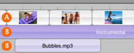

About the iMovie audio tracks
In a movie's timeline, the spaces where you can add video or audio clips are called "tracks." In iMovie HD, movies are made up of one video track (A, shown below) and two audio tracks (B, shown below), which are all displayed in the timeline viewer.

The three tracks allow you to edit video and add and manipulate multiple layers of sound, including the sound contained in the video clips. For example, you might record a voiceover for your movie in one audio track, and add music and sound effects in the second track. You can overlap sound clips within an audio track, so you could have music and sound effects in the same track.
The checkboxes to the right of each track turn the sound on or off for the track, so you can mute or hear an entire track.
 Was this page helpful? Send feedback.
Was this page helpful? Send feedback.